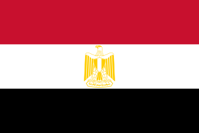
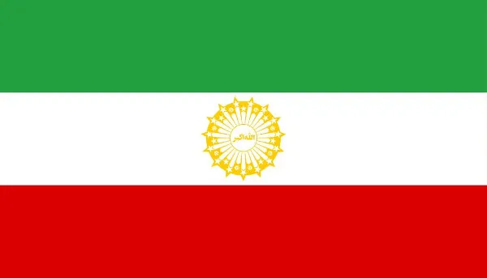
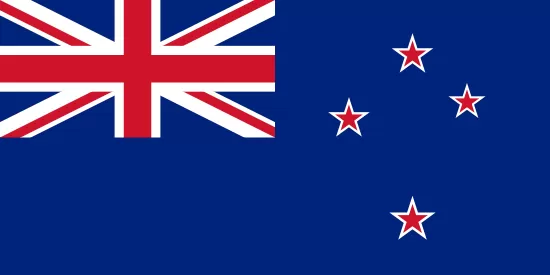

FIFA World Cup 2026
A Bélgica participou da primeira Copa do Mundo em 1930, mas sua melhor campanha na história dos mundiais ocorreu em 2018, quando conquistou o terceiro lugar. Conhecida como "Diabos Vermelhos", a seleção belga nunca venceu o torneio.
A seleção principal da Bélgica não possui nenhuma conquista de Copa do Mundo. A melhor campanha da história do país em Mundiais ocorreu na Copa da Rússia em 2018, quando os "Diabos Vermelhos" terminaram a competição na terceira colocação.
A Bélgica terminou na liderança do Grupo J das eliminatórias europeias. Foram cinco vitórias e três derrotas em oito jogos, selando a classificação na última rodada com uma goleada por 7 a 0 sobre Liechtenstein.
Copa do mundo de 2026

EgitoO Egito disputou a sua primeira Copa do Mundo em 1934, na Itália. Essa participação entrou para a história, pois os egípcios se tornaram a primeira seleção africana e árabe a jogar o torneio mundial da FIFA.

IrãO Irã disputou sua primeira Copa do Mundo em 1978. A seleção iraniana estreou no torneio contra a Holanda e conseguiu empatar com a Escócia (1x1).

Nova ZelândiaA primeira participação da Nova Zelândia em uma Copa do Mundo masculina de futebol ocorreu em 1982, na edição realizada na Espanha.
Os três melhores técnicos da seleção
Guy Thys
O treinador que esteve à frente da equipe em duas passagens marcantes (1976-1989 e 1990-1991). Ele dirigiu a Bélgica no vice-campeonato da Eurocopa de 1980 e na história campanha do 4° lugar na Copa do Mundo de 1986.
Robert Waseige
Conduziu o time à classificação para a Copa do Mundo de 2002, onde a equipe fez uma campanha sólida e foi eliminada apenas nas oitavas de final pelo Brasil, que viria a ser o campeão.
Roberto Martinez
O espanhol liderou a chamada "Geração de Ouro" e obteve a melhor colocação da seleção belga em Mundiais, conquistando o 3° lugar na Copa do Mundo de 2018. Ele também manteve a equipe na liderança do Ranking Mundial da FIFA por mais de 3 anos.
Recordista de jogos da Bélgica na Copa do Mundo
©Themewagon - All Rights Reserved